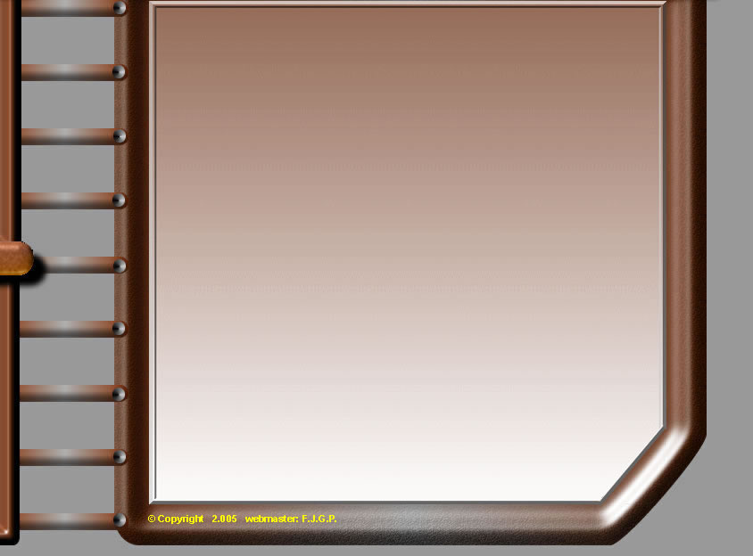
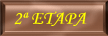
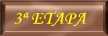
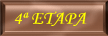

|
|||
 |
 | ||
|  | |||
|  | |||
|  | |||
|
|||
SANTIAGO (24 de JUNIO/2.005)
NOS APRESURAMOS A IR AL HOSTAL MEXICO A SOLTAR NUESTRAS MOCHILAS

Y DARNOS UNA RELAJANTE DUCHA. EL HOSTAL ESTÁ MUY BIEN, LAS HABITACIONES SON GRANDES, BUENOS ARMARIOS Y LAS CAMAS PARECÍAN NUEVAS, CON PATIO EXTERIOR Y TODO, PREGUNTAMOS EN RECEPCIÓN UN BUEN SITIO PARA COMER, NOS RECOMIENDAN EL BOCAITO Y MESÓN SAN ROMAN, PREGUNTANDO, UNA SRA. NOS RECOMIENDA QUE VAYAMOS AL GALEON. AQUÍ PONEN UNOS PLATOS COMBINADOS GRANDISIMOS A MUY BUEN PRECIO.
SUBIMOS A LA PLANTA ALTA Y NOS ANTENDIÓ UNA CHICA MUY SIMPÁTICA, ENTRE RONDA Y RONDA DE CERVEZAS, SE PONÍA A CHARLAR CON NOSOTROS, ENTRE OTRAS COSAS SE QUEJABA DEL CALOR QUE ESTABA HACIENDO ÉSTOS ULTIMOS DIAS Y QUE NO ERA NORMAL POR ESOS LUGARES.
ESTAMOS CANSADOS Y NECESITAMOS UNA SIESTA, PERO ANTES HABÍA QUE SOLUCIONAR EL TEMA DEL VIAJE DE VUELTA, NO TENEMOS TIEMPO Y NÓ PODEMOS DEJARLO PARA EL ÚLTIMO DÍA, DOS SE QUEDARON EN EL HOSTAL Y OTROS TRES FUIMOS A GESTIONAR EL TEMA. NOS DIRIGIMOS A LA AGENCIA DE VIAJES Y NOS INDICAN LO MISMO QUE POR LA MAÑANA, SOLO HAY 4 PLAZAS A 163 €. Y OTRA UN POCO MÁS CARA, (Las cosas de última hora) preguntamos por el autocar y nos manda a una oficina de información en ésta calle
(SI NÓ ES ÉSTA, ES UNA MUY PARECIDA)
LO DEL AUTOCAR HABIA QUE IR A LA ESTACION, ETC. ETC.
(VAMOS QUE NO SE TENIAN GANAS DE IR)
Y PENSAMOS LO SIGUIENTE:
HABÍAMOS ESTADO TODA LA MAÑANA DEL VIERNES POR SANTIAGO, NOS QUEDABA LA TARDE Y CASI TODO EL SÁBADO
(Salida avión a las 21,30 h.)
tiempo suficiente para conocer algunas cosillas.
POR OTRO LADO HABIA QUE SOPESAR LA DIFERENCIA DE PRECIO
VENTAJA AVIÓN: UNA HORA DE VIAJE
INCONVENIENTE: MÁS CARO, UN DÍA MENOS EN SANTIAGO
VENTAJA AUTOCAR: MÁS BARATO, UN DÍA MÁS EN SANTIAGO
INCONVENIENTE: 14 HORAS DE VIAJE (TELA MARINERA)
IR EN AUTOCAR LÓGICAMENTE ERA MAS BARATO, PERO ESTAR UN DÍA MÁS, SUPONIA GASTOS DE UN DÍA MÁS DE HOSTAL, COMIDA, EN FIN ....
NOS SENTAMOS EN UNOS VELADORES, NOS PEDIMOS UNOS CAFELITOS, COGIMOS PAPEL Y LÁPIZ; BENITO POR UN LADO, Y YÓ POR OTRO, NOS PUSIMOS A ECHAR CUENTAS Y PRÁCTICAMENTE A LOS DOS NOS SALÍA LO MISMO (DIGAMOS PERDER 90 €.) POR COGER EL AVIÓN Y CREIMOS QUE MERECÍA LA PENA.
MI HERMANO LUIS TENÍA MUCHA ILUSIÓN POR COGER EL AVIÓN, YÓ TAMBIEN Y A BENITO TAMBIEN LE GUSTABA LA IDEA.
POR TELÉFONO LE PLANTEAMOS LA SITUACIÓN A LOS OTROS DOS QUE ESTABAN EN EL HOSTAL, Y EN PRINCIPIO NO LES HACIA GRACIA, POR LO QUE DECIDIMOS PRESENTARNOS ALLÍ Y EXPLICARLES DETENIDAMENTE EL TEMA (QUERÍAMOS REALMENTE CONVENCERLES) DE QUE PENSARAN BIEN EL TEMA QUE AL FINAL NOS IBA A COMPENSAR (EL VIAJE EN AUTOCAR ERA DE 14 HORAS, SALIENDO EL DOMINGO A LAS 16,45 H. Y LLEGANDO A LAS 7,15 H. DEL LUNES) (CON LA EXPERIENCIA DEL VIAJE DE IDA 12 H. SABIAMOS DE QUE ESTÁBAMOS HABLANDO), TAMPOCO ERA CUESTIÓN DE IMPONER LA MAYORÍA SIN DAR MÁS EXPLICACIONES Y YÁ ESTÁ, TOTAL QUE AL FINAL LES PARECIÓ BIEN LA IDEA Y NOS APRESURAMOS A SACAR LOS BILLETES DE AVIÓN.
SE FUERON A LA AGENCIA DE VIAJES, YÓ ME QUEDÉ EN EL HOSTAL PARA ASEARME UN POCO Y CAMBIARME DE ROPA, A ESTO ME LLAMAN, HABIA QUE PRESENTAR LA “COMPOSTELA” (Certificado del Peregrino) PARA QUE NOS HICIERAN LOS DESCUENTOS Y SÓLO QUEDABA 5 MINUTOS PARA CERRAR, HACÍA TELA DE TIEMPO QUE YO NO CORRÍA TANTO. TOTAL YÁ CON LOS BILLETES DEBAJO DEL BRAZO NOS DISPUSIMOS A PASAR LA TARDE POR SANTIAGO.

ESTUVIMOS DE BAR EN BAR PROBANDO EL ALVARIÑO, RIBEIRO, CERVEZAS, ETC.
NOS ENCONTRAMOS AL CHINGURRI Y SU NOVIA Y NOS COMENTARON LO DE LA ETAPA DE MONTE DO GOZO, ELLOS HICIERON UNOS 35 Km. PERO NO HUBO NI FIESTA NI NADA EN MONTE DO GOZO. CONTINUAMOS DE BAR EN BAR CON UNA TEMPERATURA EN LA CIUDAD ESTUPENDA .
SE UNIÓ EL ÚLTIMO QUE FALTABA AL GRUPO Y YÁ FUIMOS A COMER A UN RESTAURANTE DONDE COMIMOS A LO GRANDE, MARISCADA IMPONENTE, CARNES, VINOS DE LA COMARCA ETC.


NOS INVITARON A LA COPITA DE RIGOR, SALIMOS Y NOS METIMOS EN EL “MODUS VIVENDI” LA CHICA DE ÉSTE GARITO, NOS INFORMA DE LA MOVIDA Y NOS DÁ UN PLANO PARA RECORRER TODOS LOS PUBS, GARITOS Y BARES DE LA ZONA, COSA QUE MUY GUSTOSAMENTE HICIMOS, TERMINAMOS HASTA EL GORRO DE CUBATAS

CUANDO NOS DIMOS CUENTA ESTABA CERRADO CASI TODO DEL CASCO ANTIGUO DE LA CIUDAD, A ESO DE LAS 4:00 H. VOLVIMOS AL HOSTAL, POR LA PARTE MODERNA DE LA CIUDAD, LAS DISCOTECAS Y SALAS DE FIESTAS TENÍAN MUCHO AMBIENTE, HICIMOS UN INTENTO DE SEGUIR LA MARCHA, PERO NO NOS PUSIMOS DE ACUERDO Y TODOS AL HOSTAL.
SANTIAGO (25 de JUNIO/2.005)
QUEDAMOS SOBRE LAS 11,15 PARA DESAYUNAR Y VISITAR CON MÁS TIEMPO LA CATEDRAL Y LA CIUDAD, CUANDO LLEGAMOS HABÍA MÁS GENTE QUE EL DÍA ANTERIOR
SUBIMOS AL RETABLO A BESAR LA CONCHA QUE ESTA EN LA ESPALDA DEL APÓSTOL SANTIAGO
Y NOS QUEDAMOS UN RATO HABER SÍ EN ÉSTA MISA PONÍAN EL BOTAFUMEIRO, NOS ENTERAMOS QUE ÉSTE SÓLO SE PONE EN OCASIONES MUY MUY ESPECIALES ó PAGANDO A TRAVÉS DE UNA ASOCIACIÓN ó YÓ QUE SÉ, YÁ CASI TIRAMOS LA TOALLA DE QUE PUDIÉSEMOS VERLO (QUE SERÍA EL GRAN COLOFÓN A NUESTRA AVENTURA QUE ESTABA SIENDO MARAVILLOSA) VAMOS NO IMAGINÁBAMOS NI POR ASOMO, QUE TODO IBA A SALIR TAN PERFECTO.
NOS DISPONÍAMOS A SALIR DEL TEMPLO PARA HACERNOS UNAS FOTOS FUERA EN LA PLAZA, CUANDO ME DIÓ POR PREGUNTAR A UN CURA EN UN CONFESIONARIO, Y ME DIJO QUE HOY PONDRÍAN EL BOTAFUMEIRO, EN HONOR A TODOS LOS SANTOS Y QUE ALGUNA CONGREGACIÓN HABÍA PAGADO POR ELLO. ESTABAN EN LA PUERTA DE SALIDA ESPERÁNDOME, LES HICE UN GESTO PARA QUE VOLVIERAN ADENTRO, SE ACERCAN Y LES COMENTO EL TEMA, INCRÉDULOS PREGUNTAMOS OTRA VEZ Y EL CURA VOLVIÓ A RESPONDER LO MISMO, SÍ, HOY PONDRÁN EL BOTAFUMEIRO. RÁPIDAMENTE NOS DIRIJIMOS A UNO DE LOS LATERALES DE LA CATEDRAL PARA VER MEJOR LA TRAYECTORIA DEL BOTAFUMEIRO.
LO QUE VINO A CONTINUACIÓN, REALMENTE NO HAY PALABRAS PARA DESCRIBIR LA SENSACIÓN QUE SE VIVE, IBAN IMPULSANDO CON LAS CUERDAS, SUBIENDO LENTAMENTE HASTA PASAR ROZANDO UNA BARANDILLA, CON CERTERO MOVIMIENTO DE VAIVÉN EL BOTAFUMEIRO CRUZABA LA NAVE DE LA CATEDRAL DE EXTREMO A EXTREMO, SE TE VENÍA ENCIMA Y PARECÍA QUE IBA A CAER SOBRE TU CABEZA, EN FIN, YÓ PARTICULARMENTE ME SENTÍA ORGULLOSO DE ESTAR ALLI EN ESE PRECISO MOMENTO, ME SENTÍA UN PRIVILEGIADO, IMAGINO QUE LOS DEMÁS IGUAL.

AQUÍ EN ESTA FOTO SE APRECIA LA CARA DE SOLEMNIDAD QUE TENÍAMOS (SEMBLANTES MUY SERIOS) (no vale reirse je,je).

DESPUES DE ÉSTO, SALIMOS A LA PLAZA Y NOS ENCONTRAMOS CON NUESTROS AMIGOS, NOS HICIMOS FOTOS Y LLEGABA EL MOMENTO DE LAS DESPEDIDAS NUESTROS OJOS EMPIEZAN A BRILLAR UN POCO MÁS, FUGAZMENTE PASA POR NUESTRAS CABEZAS COMO SI DE UNA PELÍCULA SE TRATARA, LOS MOMENTOS VIVIDOS JUNTOS DURANTE EL CAMINO SOBRE TODO EL DIA DE LA FIESTA, SÍ A NOSOTROS NOS PARECIÓ DURA LA DESPEDIDA, ENTRE ELLOS QUE LLEVABAN MUCHO MÁS TIEMPO JUNTOS, HABÍA QUE IMAGINÁRSELA, YÁ HABIAN LLORADO LA DE EMILIO QUE PARTIÓ PARA MADRID POR LA MAÑANA Y AHORA CADA UNO DEBÍA VOLVER A SUS CASAS.
"QUE FUERTES SENSACIONES"


SE ACERCÓ LA HORA DE COMER Y SABIENDO LAS COLAS QUE SE FORMAN EN “CASA MANOLO” UN ESTUPENDO RESTAURANTE QUE NOS HABÍAN RECOMENDADO, NOS DIRIJIMOS HACIA LA PLAZA DE CERVANTES, ESPERAMOS APROX. UN CUARTO DE HORA Y YÁ NOS UBICARON EN UNA MESA AL FONDO A LA DCHA. PEGADA A LOS VENTANALES.

TENEMOS MENÚ (Lo que cuente es para nada, hay que estar alli, ver los platos, degustarlos y despues valorar) y si digo los precios entonces no se lo vais a creer
DESPUÉS SEGUIMOS EL RECORRIDO POR LA CIUDAD, NOS TOMAMOS NUESTRO CAFÉ Y TRAS EL MISMO,

NOS QUEDABA PENDIENTE COMPRAR REGALOS Y RECUERDOS PARA LOS NUESTROS. ENTRAMOS EN NUMEROSAS TIENDAS Y FUIMOS CARGADOS CON NUESTRAS BOLSAS A UN PRECIOSO PARQUE QUE HACIA DE MIRADOR, DONDE LAS VISTAS DE LA CIUDAD ERAN IMPRESIONANTES. SE NOS ACERCA UN HOMBRE, Y NOS HACE UNAS FOTOS, DESPUÉS EMPIEZA A EXPLICARNOS UN MONTÓN DE COSAS DE SANTIAGO Y DE SU VIDA, HABÍA TRABAJADO EN BIBLIOTECAS Y POSEÍA UNA GRAN COLECCIÓN DE LIBROS Y ERA DE ESAS PERSONAS QUE ESTÁN DESEANDO CONTARLES A LOS DEMÁS TODO LO QUE SABE Y LO QUE HA LEIDO (ESTÁBAMOS FLIPANDO, TENÍAMOS HASTA UN GUÍA, QUE MÁS SE PUEDE PEDIR), TUVIMOS QUE PARARLE UN POCO, LA HORA SE NOS ECHABA ENCIMA Y ESTE HOMBRE SE PODÍA LLEVAR HABLANDO DOS SEMANAS SEGUIDAS, PERO BUENO SUS COMENTARIOS FUERON INSTRUCTIVOS.

NOS QUEDA POCO YÁ EN SANTIAGO, HEMOS APROVECHADO AL MÁXIMO EL TIEMPO, LLEVAMOS UN DÍA INTENSO, MISA, BOTAFUMEIRO, DESPEDIDAS, RECORRIDO VISITA CULTURAL, GRAN ALMUERZO, TARDE DE COMPRAS, EL TIEMPO ACOMPAÑA, TEMPERATURA IDÓNEA, GRANDES VISTAS DESDE EL PARQUE INCLUIDO “GUIA”, SÓLO TENEMOS TIEMPO PARA RECOGER NUESTRAS MOCHILAS Y DIRIGIRNOS A LA PARADA DEL AUTOBÚS QUE NOS LLEVARÁ AL AEROPUERTO.
LLEGAMOS, FACTURAMOS EL EQUIPAJE Y AL POCO TIEMPO EMBARCAMOS EN NUESTRO AVIÓN.

UNA VEZ DENTRO, NOS DIMOS CUENTA QUE LA AVENTURA SE ACABÓ DE VERDAD, HABÍA UNA MEZCLA DE TRISTEZA Y DE ALEGRÍA, TRISTEZA PORQUE TE MARCHABAS DE UN LUGAR ENCANTADOR QUE SIEMPRE VAMOS A RECORDAR FELIZMENTE, POR LA SUERTE QUE NOS ACOMPAÑÓ PARA QUE SALIERA TODO TAN BIEN. Y POR OTRA PARTE ALEGRÍA PORQUE IBAS A REUNIRTE CON LOS TUYOS, YÁ SE ECHABA DE MENOS DESPUÉS DE UNA SEMANA FUERA DE CASA.
LLEGADA AL AEROPUERTO DE SEVILLA

FIN DE LA HISTORIA (ESTO ES TODO AMIGOS).